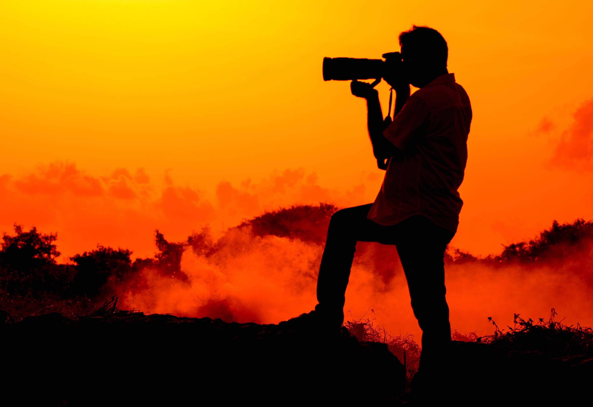
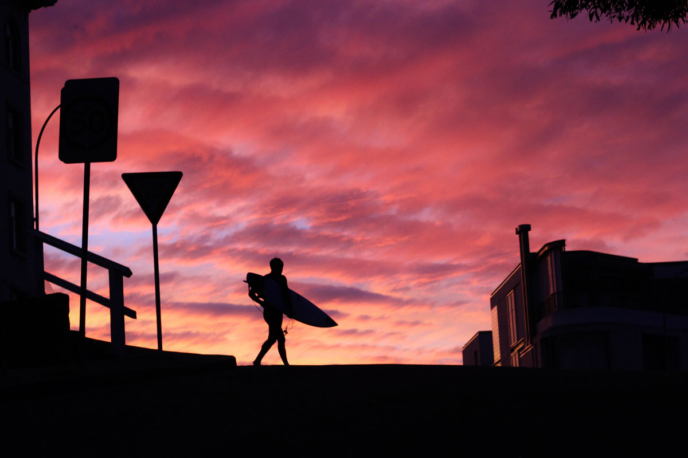
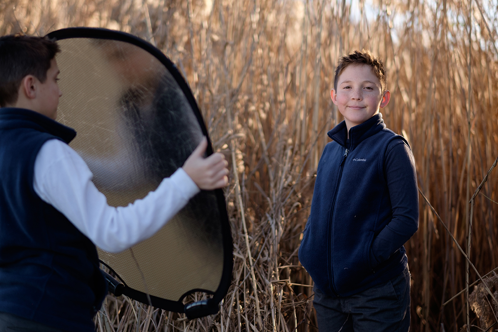

27 Oct 2019
Author : Nathachai
บ่อยครั้งที่คนเราพอเจอการถ่ายภาพย้อนแสงอาทิตย์เข้าสักหน่อยก็เบนกล้องหนีหรือลากนางแบบไปถ่ายที่มุมอื่น หารู้ไม่ว่าภาพถ่ายย้อนแสงนี่แหละคือสุดยอดของการถ่ายภาพบุคคลเลยนะ!
ภาพย้อนแสง ถ้าจะให้อธิบายเข้าใจแบบเรียบง่ายก็คือ การถ่ายภาพที่เรายืนอยู่ตรงกันข้าม หรือหันหน้าอยู่เกือบจะตรงข้ามกันกับจุดกำเนิดแสง ทำให้คน สิ่งของ วัตถุ ที่เราจะถ่ายนั้นเกิดเงาดำ เนื่องจากแหล่งกำเนิดแสงอยู่ข้างหลังวัตถุนั่นเองครับ ส่วนใหญ่การถ่ายภาพโดยใช้การย้อนแสงที่เราคุ้นตาคือการถ่ายภาพแนวซิลลูเอท (Silhouette)
สำหรับใครที่เพิ่งเริ่มถ่ายภาพผมขออธิบายให้เข้าใจถึงปัญหาที่มักจะเจอครับ เมื่อเราต้องถ่ายภาพย้อนแสง จะได้เข้าใจและเตรียมตัวให้พร้อม ทุกคนที่ถ่ายภาพจะเจอเรื่องแบบนี้อยู่แล้วแน่นอน 100% ไม่ว่าจะใช้กล้องโทรศัพท์มือถือหรือกล้องดิจิตอลแบบช่างภาพก็ตาม
เมื่อแหล่งกำเนิดแสงอยู่ด้านหลังวัตถุ ก็จะเกิดเงาขึ้น ยิ่งแสงแรงมาก ก็จะทำให้เงามากขึ้น ปัญหาที่ตามมาต่อคือรายละเอียดในตัววัตถุ ก็จะจมไปกับเงา ยกตัวอย่างนางแบบ ผิวสวย ๆ ก็จะดูไม่กระจ่าง เกิดเงาดำ สีที่เคยสดใสก็หม่น มืดลง
กล้องจะจับโฟกัสไม่ค่อยได้ สังเกตถ้าใครใช้มิลเรอร์เรส (Mirrorless) หรือ DSLR (กล้องดิจิตอลที่มีชุดยกกระจก) ก็จะเกิดอาการโฟกัสไม่เข้า วืดวาดบ่อย ๆ อาจจะเซ็งได้ หรือจับจังหวะยากลำบากขึ้น
เพราะไม่เคยชินกับรายละเอียดที่หายไป แล้วก็อาจจะยังไม่เข้าใจว่าสามารถจัดการกับภาพยังไงได้บ้าง ก็เลยคิดว่าจัดองค์ประกอบยาก ภาพไม่สวย คิดว่าถ้าถ่ายย้อนแสงแล้วได้ภาพแย่แน่นอน
เริ่มจากการทำความเข้าใจกับแนวความคิด (Mindset) ในการถ่ายภาพย้อนแสงนี้ก่อน เพราะแนวคิดเป็นปัจจัยที่ส่งผลต่อจินตนาการในการถ่ายภาพของเราครับ
ตำแหน่งของดวงอาทิตย์ในแต่ละช่วงเวลา เขาให้น้ำหนักแสง และทิศทางของแสงที่แตกต่างกัน สังเกตได้ว่าถ้าเที่ยงตรง แสงแดดจะแรง ภาพจะแข็ง เงาจะอยู่ใต้ตา เพราะแสงอยู่กลางศีรษะเราเลย แต่ถ้าเป็นช่วงเย็นจะได้แสงย้อนที่สวย สีอมส้ม ๆ ทอง ๆ สวยงาม ถ้าเป็นช่วงเช้าแสงจะอ่อนโยน ละมุนน่าถ่ายรูปมาก ถ้าย้อนก็ยังได้อารมณ์ภาพที่แตกต่างจากตอนช่วงเวลาอื่น
การเข้าใจเรื่องทิศทางแสงกับช่วงเวลา จะทำให้เรารู้ว่าแสงแดดเวลาไหนเหมาะกับการถ่ายรูป ช่วงเวลาไหนได้สี ได้แสง ได้เงาน้ำหนักเท่าไหร่ เวลาถ่ายย้อนแสงเวลาไหนสวย เวลาไหนไม่ควรนัดเพื่อนมาถ่าย เป็นต้นครับ
การถ่ายภาพย้อนแสงเป็นโอกาสที่ดีในการสร้างสรรค์ไอเดียภาพสวยงามเยอะแยะมากครับ ให้เปลี่ยนมุมมองใหม่กับคำพูดที่ว่า “อย่าถ่ายภาพย้อนแสง” ให้เป็น “ถ่ายย้อนแสงยังไงให้ภาพสวย” ดีกว่าครับ เพราะช่างภาพนี่วิ่งหาโอกาสการย้อนแสงสวย ๆ เยอะแยะเลย
ภาพซิลลูเอท คือภาพที่เราถ่ายย้อนจนให้เห็นแบบเป็นเงามืดดำ แต่รูปลักษณ์ของเงาดำนั้นจะเห็นเป็นภาพที่สวยงาม “ดูรู้เรื่อง” ว่าเงานั้นหมายถึง บุคคล สถานที่ หรือสิ่งของ ซึ่งการถ่ายภาพแบบนี้ความสำคัญจะอยู่ที่ “เรื่องราว” และ “องค์ประกอบ” ที่พอดี ไม่รกเกินไป จะเน้นที่ตัวแบบที่มืดกับท้องฟ้าสว่างไปเลย
ริมไลท์คือแสงที่อยู่ตรงขอบของตัวแบบหรือวัตถุ เกิดจากตำแหน่งของแหล่งกำเนิดแสงอยู่ตำแหน่งที่ตรงกันกับด้านหลังหรือด้านข้างของแบบ ทำให้เกิดขอบแสงเป็นประกาย นิยมใช้กับเส้นผม หรือขอบวัตถุที่มีลักษณะเป็นประกายเล็ก ๆ สวยงาม การถ่ายภาพย้อนแสงแบบทำให้เกิด Rim Light หัวใจสำคัญคือการจัดองค์ประกอบให้เหมาะสมและควรจัดตำแหน่งของแสงให้เข้ามาที่ใบหน้าบ้าง เพื่อไม่ให้เกิดเงามืดที่หน้าเกินไป
แฟลร์ (Flare) เกิดจากแสงที่วิ่งเข้ามาในเลนส์แล้วเกิดการสะท้อนไปมาในชิ้นเลนส์ ก็จะเกิดเอฟเฟคแบบนี้ขึ้น ซึ่งแต่ละเลนส์จะไม่เหมือนกัน ปกติภาพแฟลร์จะเป็นปัญหาของช่างภาพในการถ่ายย้อนแสงซึ่งจะเป็นได้กับทุกเลนส์ มากน้อยต่างกันไป เพียงแต่ว่าการใช้แฟลร์ที่เกิดขึ้นในการสร้างเอฟเฟคให้สวยงามก็เป็นอีกวิธีการนึงที่ทำให้ภาพถ่ายดูน่าสนใจขึ้นมาได้
บางครั้งเราอาจจะเลือกวิธีการเติม Flash เข้าไปตรง ๆ หรือใช้ Reflect ที่เป็นแผ่นสะท้อน น่าจะเคยเห็นคนที่ถ่ายภาพรับปริญญาแล้วเล่นยิงแฟลชตอนกลางวันแสก ๆ นั่นแหละครับเขาทำเพื่อเติมแสงให้เข้าไปที่หน้าของแบบ ทำให้รายละเอียดของใบหน้า ผิว เพิ่มขึ้นมาจากเดิมได้ แน่นอนว่าต้องฝึกเรื่องความเข้าใจของทิศทางแสงและน้ำหนักในการเติมแสงเข้าให้เหมาะสม รวมถึงอุปกรณ์ก็อาจจะต้องมีคนช่วยถือ ช่วยเซ็ตด้วย
เพื่อใช้ศักยภาพของกล้องให้เต็มที่ เป็นทั้งกระบวนการก่อนและหลังการถ่ายภาพ คือเตรียมตัวเตรียมอุปกรณ์ให้พร้อม และนำภาพกลับมาแต่งเพิ่ม เสริมรายละเอียดให้ดีขึ้น ปรับปรุงจุดที่ไม่ดีในภาพให้ออกไป เราก็จะได้ภาพที่สมบูรณ์มากขึ้นครับ